Our paper that combines information theory and mathematical logic has been published in the Proceedings of the National Academy of Sciences. The intended usage of this website is as a companion to that paper; we only select a few topics and expand on them for didactic purposes.

Key to our work is a crisp definition of the meaning of a logic sentence. The piece below builds that notion — we call it a sentence’s kernel — from worked examples, following the same approach as the paper itself.
With that vocabulary established, our results can be stated almost geometrically: communicating a sentence means communicating enough about its kernel.
Consider a case in which intuition might mislead: one would expect that knowing what it is that one’s audience knows should make communication cheaper, and not knowing it should incur some cost. Surprisingly, not knowing what it is that the audience knows results only in a slight efficiency loss. The piece below illustrates the core mechanism we use to establish this.
Now suppose Alice knows what it is that Bob knows, and needs only for him to be able to prove one specific fact, not everything she knows. One would expect the cheapest possible message to be the one stating exactly that fact, no more. The piece below presents a strategy that is provably cheaper still — along with a hidden paradox.
In the following explainer, we demonstrate the relative cost of correcting someone who agrees with you generally, but knows less than you do, versus a situation where they believe conflicting information.
For the origins of this project, IBM Research has also published a feature describing how it grew from a years-long side project into the collaboration described here.